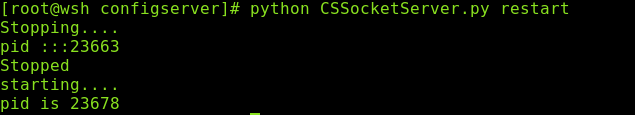
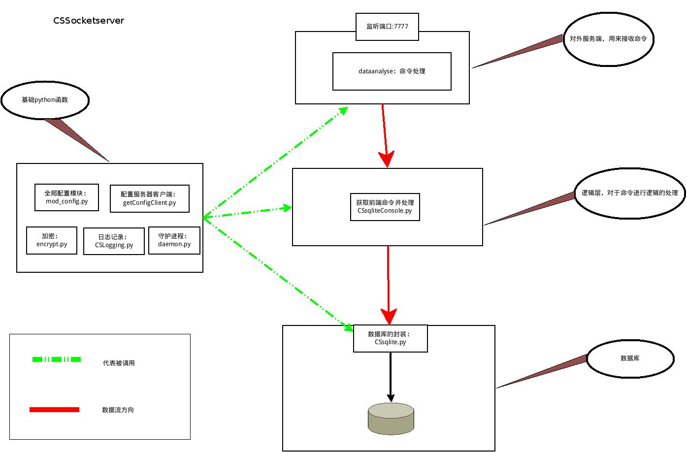
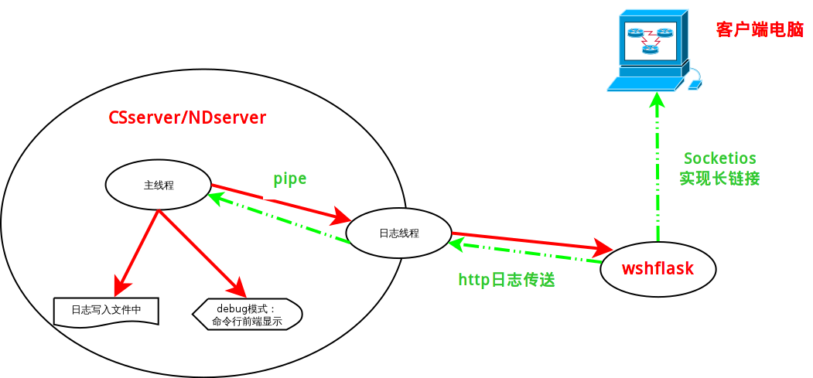

1 软件简介
这是一个类似nagios的服务器架构，有多节点(nodeserver)和一个配置服务器(CSServer),以及一个用户UI(wshflask)组成。
2 系统需求：
| 组件 | 需求 | 简介 |
|---|---|---|
| 系统 | linux | |
| python | python2 且版本为python2.7 | 目前能够保证在python2.6.6 和python2.7下正常运行 |
| expect | linux系统软件 | 可以通过 "yum install expect " 进行安装 |
2.1 wshflask需求环境
依赖软件:
主要是flask软件，有点多，以后更新
3 命令介绍
3.1 CSserver/NDserver
3.1.1 启动方式
1. CSSSocketerver启动命令 python CSSocketServer.py debug/start/restart/stop 2. NDSocketServer启动命令 python NDSocketServer.py debug/start/restart/stop
3.1.2 效果展示
- start命令

- stop命令

- restart命令

- debug命令
3.2 wshflask
3.2.1 启动方式
python manage.py runserver
3.2.2 效果展示

3.2.3 web界面展示

4 架构说明
4.1 整体架构
4.1.1 说明：
- 所有的查找都是基于 CSserver的
- 任何的两台服务器之间都是可以通信的
4.1.2 框架

4.2 服务架构
4.2.1 nodeserver

4.2.2 CSserver

4.2.3 wshflask

4.3 日志系统
4.3.1 日志系统的作用
日志可以分为三个部分：
- 输出到屏幕上，用来作为debug
- 输出到日志中，作为历史记录
- 输出到远端，作为远端服务区的实时显示。
NOTE： 目前1 和2 放到了一起。
4.3.2 技术实现
4.3.3 日志系统的框架设计

5 api
CSsocketServer请参考：doc/configserverdoc/_build/html/index.html NDSocketServer请参考：doc/nodeserverdoc/_build/html/index.html